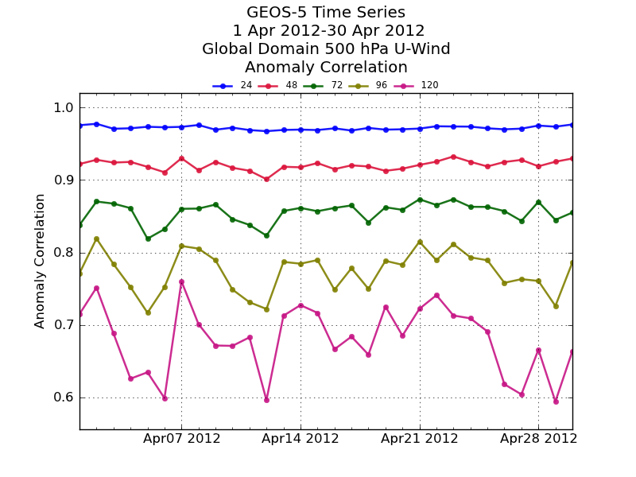
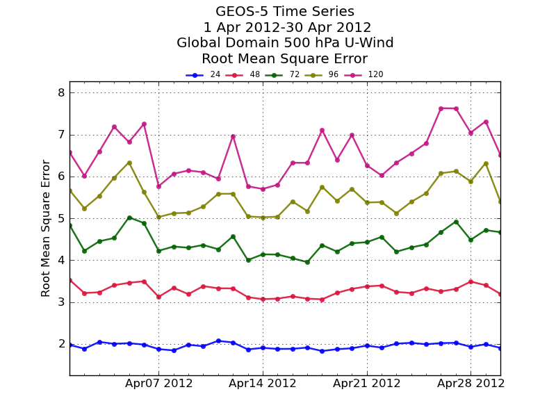
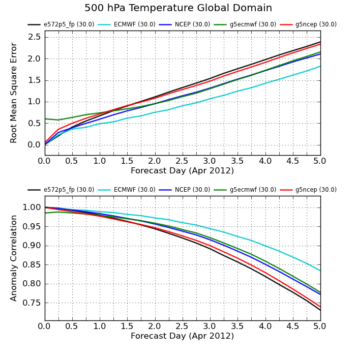
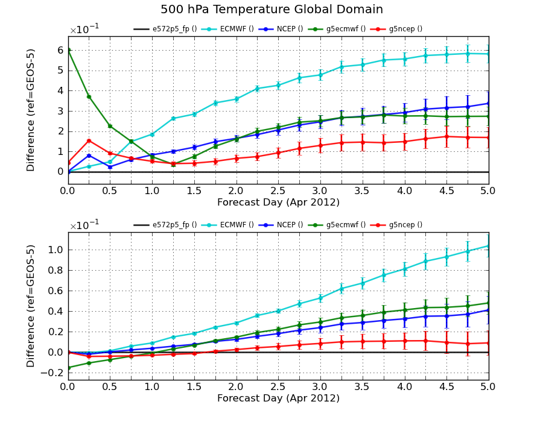
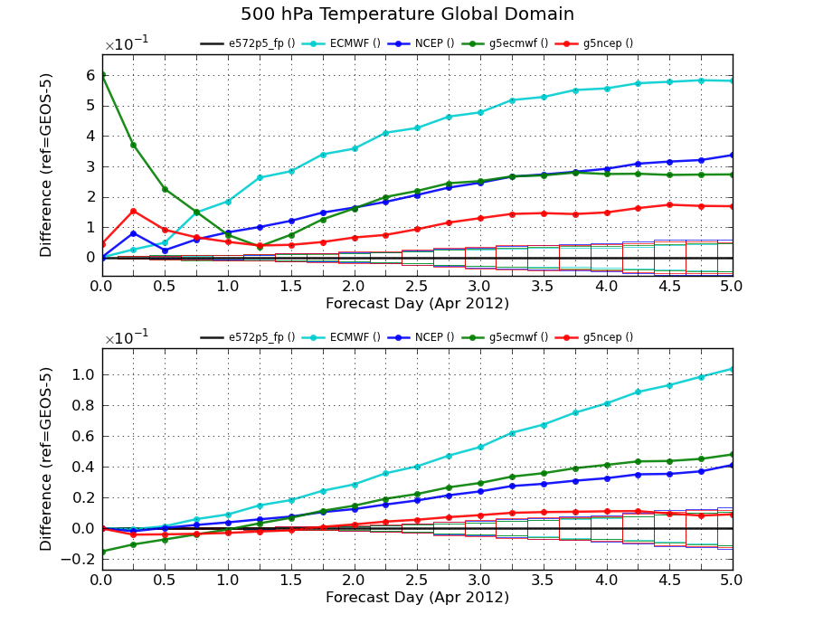
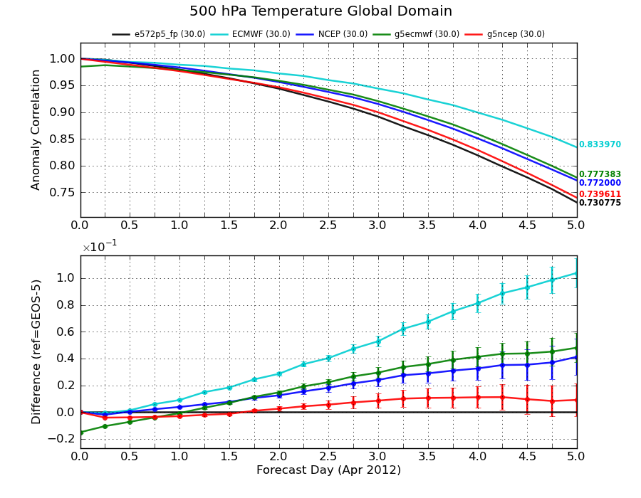
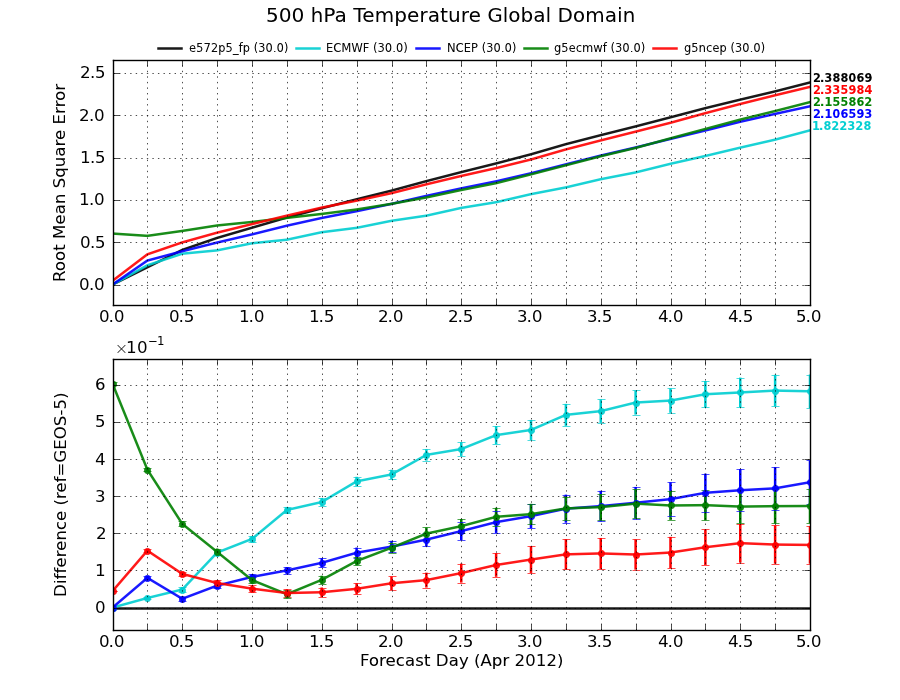

Forecast statistics are computed in operations and research experiments and loaded into a SemperPy database.
SemperPy does not compute forecast skill scores because there is an existing application which computes statitics on forecast fields. To actions were taken:
- the statistic computation application was modified (Ricardo Todling) to generate a text file which can be read by SemperPy to populate the database. Every new forecast generated will have an associated text file, both in operations and for research experiments. This works for the present and future.
- a grad script (Autin Conaty) read the forecast statistic binary files and generates text files which can be read by SemperPy. This is the mode to use for statistics generated in the past.
In both cases a file (e.g. score.txt) SemperPy can understand is generated:
count|date|domain_name|east|expver|forecast|level|levtype|north|source|south|statistic|step|type|value|variable|verify|west 0.0|2012040100|global|180.0|e572p2_fp|gmao|500.0|pl|90.0|gmao|-90.0|rms_dsp|0|fc|0.0|u|gmao|-180.0 0.0|2012040100|global|180.0|e572p2_fp|gmao|1000.0|pl|90.0|gmao|-90.0|cor|0|fc|1.0|v|gmao|-180.0 0.0|2012040100|global|180.0|e572p2_fp|gmao|700.0|pl|90.0|gmao|-90.0|rms_ran|0|fc|0.0|v|gmao|-180.0To upload that file in a database called fc_example:
spy_txt2db --no_check_domains fc_example score.txtThe option –no_check_domains tell SemperPy not to compare domain boundaries defined in the file with domain boundaries defined in SemperPy because in the case of forecast statistics, they are different.
Two specific plots have been implemented to visualize forecast scores, adding to the standard timeseries plot:
A typical timeseries plot: score_timeseries.py:
from gmaopy.modules.scoreplot import * document( plotdata = scoredata( type = 'fc', domain = 'global', variable = 'u', level = 500, levtype = 'pl', database = 'fc_ops', statistic = ['cor','rms'], date = Dates(2012040100,2012043000,24), datefile = 'scoredates.def' ), plot = timeseriesplot( { 'graphics.marker' : 'o', 'graphics.markersize': 5 }, plotdata = scoredata( step = [24,48,72,96,120], ), legend = plotlegend( mode = None, ncol = 100, loc = 'outside top', vertical_offset = 0.02, prop = plotfont( size = 'x-small' ), columnspacing = 0.7, handletextpad = 0.7, ) ), interactive = False, output = 'score_timeseries_<statistic>.png' )produces:


The mean plot compute means of forecast scores over time periods and displays the result against the valid time of the forecast. These are also known as “die off curves” score_mean.py:
from gmaopy.modules.scoreplot import * document( plotdata = scoredata( type = 'fc', domain = 'global', variable = 't', level = 500, levtype = 'pl', statistic = ['rms','cor'], database = 'fc_ops', date = Dates(2012040100,2012043000,24), ), title = [' ','<level> <variable> <domain_name>'], plot = [ meanplot( plotdata = scoredata( step = [0,6,12,18,24,30,36,42,48,54,60,66,72,78,84,90,96,102,108,114,120], ), display_last_curve_value = False, legend = plotlegend( ncols = 5, loc = 'outside top', mode = None, prop = plotfont( size = 'x-small' ) ), curve = [ line( graphics = graphics(color = 'black'), plotdata = scoredata(forecast = 'gmao',verify = 'gmao',datefile='scoredates.def'), legend = 'e572p5_fp (<population>)', ), line( graphics = graphics(color = 'darkturquoise'), plotdata = scoredata(forecast = 'ecmwf',verify = 'ecmwf'), legend = 'ECMWF (<population>)' ), line( graphics = graphics(color = 'blue'), plotdata = scoredata(forecast = 'ncep',verify = 'ncep'), legend = 'NCEP (<population>)' ), line( graphics = graphics(color = 'green'), plotdata = scoredata(forecast = 'gmao',verify = 'ecmwf'), legend = 'g5ecmwf (<population>)' ), line( graphics = graphics(color = 'red'), plotdata = scoredata(forecast = 'gmao',verify = 'ncep'), legend = 'g5ncep (<population>)' ), ], has_legend = True, has_xtitle = True, xtitle = 'Forecast Day (<month>)', ), ], interactive = False, output = 'mean_<statistic>.png', layout = [1,2], size = [7,7], has_title = True )produces:

The diffplot reproduces a plot produced originally by Larry Takacs and Stepthen Bloom where the refence is a straight line on the 0 coordinate and other curves represent the difference of the mean of the values for each curve and the mean of the values of the reference. Significance boxes can also be displayed.
For anomaly correlations, all the calculations all the computation are done after applying a Z-transform, the result is then transformed back.
An example score_diff.py
from gmaopy.modules.scoreplot import * document( plotdata = scoredata( type = 'fc', domain = 'global', variable = 't', level = 500, levtype = 'pl', statistic = ['rms','cor'], database = 'fc_ops', date = Dates(2012040100,2012043000,24), ), title = [' ','<level> <variable> <domain_name>'], plot = [ diffplot( { 'graphics.marker' : 'o', 'graphics.markersize': 5 }, plotdata = scoredata( step = [0,6,12,18,24,30,36,42,48,54,60,66,72,78,84,90,96,102,108,114,120], ), legend = plotlegend( ncols = 5, loc = 'outside top', mode = None, prop = plotfont( size = 'x-small' ) ), curve = [ line( graphics = graphics(color = 'black',marker = ''), plotdata = scoredata(forecast = 'gmao',verify = 'gmao'), legend = 'e572p5_fp (<population>)', ), line( graphics = graphics(color = 'darkturquoise'), plotdata = scoredata(forecast = 'ecmwf',verify = 'ecmwf'), legend = 'ECMWF (<population>)' ), line( graphics = graphics(color = 'blue'), plotdata = scoredata(forecast = 'ncep',verify = 'ncep'), legend = 'NCEP (<population>)', ), line( graphics = graphics(color = 'green'), plotdata = scoredata(forecast = 'gmao',verify = 'ecmwf'), legend = 'g5ecmwf (<population>)' ), line( graphics = graphics(color = 'red'), plotdata = scoredata(forecast = 'gmao',verify = 'ncep'), legend = 'g5ncep (<population>)' ), ], has_xtitle = True, xtitle = 'Forecast Day (<month>)', has_ytitle = True, ytitle = 'Difference (ref=GEOS-5)', ), ], interactive = False, output = 'diff_<statistic>.png', layout = [1,2], size = [9,7], has_title = True )produces:

There are a few options regarding the representation of significance. By default error bars are used to show the significance interval. Two other options exist:
- do not display significance intervals
- display significance boxes following the representation used previously
In the diffplot, the keyword significance can be specified to change the mode of display of the significance intervals and other graphical parameters. To display boxes on the reference curve score_diff_boxes.py:
from gmaopy.modules.scoreplot import * document( plotdata = scoredata( type = 'fc', domain = 'global', variable = 't', level = 500, levtype = 'pl', statistic = ['rms','cor'], database = 'fc_ops', date = Dates(2012040100,2012043000,24), ), title = [' ','<level> <variable> <domain_name>'], plot = [ diffplot( { 'graphics.marker' : 'o', 'graphics.markersize': 5 }, plotdata = scoredata( step = [0,6,12,18,24,30,36,42,48,54,60,66,72,78,84,90,96,102,108,114,120], ), significance = significance( type = 'box' ), legend = plotlegend( ncols = 5, loc = 'outside top', mode = None, prop = plotfont( size = 'x-small' ) ), curve = [ line( graphics = graphics(color = 'black',marker = ''), plotdata = scoredata(forecast = 'gmao',verify = 'gmao'), legend = 'e572p5_fp (<population>)', ), line( graphics = graphics(color = 'darkturquoise'), plotdata = scoredata(forecast = 'ecmwf',verify = 'ecmwf'), legend = 'ECMWF (<population>)' ), line( graphics = graphics(color = 'blue'), plotdata = scoredata(forecast = 'ncep',verify = 'ncep'), legend = 'NCEP (<population>)', ), line( graphics = graphics(color = 'green'), plotdata = scoredata(forecast = 'gmao',verify = 'ecmwf'), legend = 'g5ecmwf (<population>)' ), line( graphics = graphics(color = 'red'), plotdata = scoredata(forecast = 'gmao',verify = 'ncep'), legend = 'g5ncep (<population>)' ), ], has_xtitle = True, xtitle = 'Forecast Day (<month>)', has_ytitle = True, ytitle = 'Difference (ref=GEOS-5)', ), ], interactive = False, output = 'diff_boxes_<statistic>.png', layout = [1,2], size = [9,7], has_title = True )produces:

Using meanplot and diffplot, the familiar combination plot can be generated score_combined.py
from gmaopy.modules.scoreplot import * document( plotdata = scoredata( type = 'fc', domain = 'global', variable = 't', level = 500, levtype = 'pl', statistic = ['rms','cor'], database = 'fc_ops', date = Dates(2012040100,2012043000,24), ), title = [' ','<level> <variable> <domain_name>'], plot = [ meanplot( plotdata = scoredata( step = [0,6,12,18,24,30,36,42,48,54,60,66,72,78,84,90,96,102,108,114,120], ), display_last_curve_value = True, # <---- note this keyword in meanplot legend = plotlegend( ncols = 5, loc = 'outside top', mode = None, prop = plotfont( size = 'x-small' ) ), curve = [ line( graphics = graphics(color = 'black'), plotdata = scoredata(forecast = 'gmao',verify = 'gmao',datefile='scoredates.def'), legend = 'e572p5_fp (<population>)', ), line( graphics = graphics(color = 'darkturquoise'), plotdata = scoredata(forecast = 'ecmwf',verify = 'ecmwf'), legend = 'ECMWF (<population>)' ), line( graphics = graphics(color = 'blue'), plotdata = scoredata(forecast = 'ncep',verify = 'ncep'), legend = 'NCEP (<population>)' ), line( graphics = graphics(color = 'green'), plotdata = scoredata(forecast = 'gmao',verify = 'ecmwf'), legend = 'g5ecmwf (<population>)' ), line( graphics = graphics(color = 'red'), plotdata = scoredata(forecast = 'gmao',verify = 'ncep'), legend = 'g5ncep (<population>)' ), ], has_legend = True, ), diffplot( { 'graphics.marker' : 'o', 'graphics.markersize': 5 }, plotdata = scoredata( step = [0,6,12,18,24,30,36,42,48,54,60,66,72,78,84,90,96,102,108,114,120], ), curve = [ line( graphics = graphics(color = 'black',marker = ''), plotdata = scoredata(forecast = 'gmao',verify = 'gmao'), ), line( graphics = graphics(color = 'darkturquoise'), plotdata = scoredata(forecast = 'ecmwf',verify = 'ecmwf'), ), line( graphics = graphics(color = 'blue'), plotdata = scoredata(forecast = 'ncep',verify = 'ncep'), ), line( graphics = graphics(color = 'green'), plotdata = scoredata(forecast = 'gmao',verify = 'ecmwf'), ), line( graphics = graphics(color = 'red'), plotdata = scoredata(forecast = 'gmao',verify = 'ncep'), ), ], has_xtitle = True, xtitle = 'Forecast Day (<month>)', has_ytitle = True, ytitle = 'Difference (ref=GEOS-5)', ), ], interactive = False, output = 'combined_<statistic>.png', layout = [1,2], size = [9,7], has_title = True )produces:


{kind=link}
{kind=link}
{kind=link}
{kind=link}
{kind=link}
{kind=link}
{kind=link}